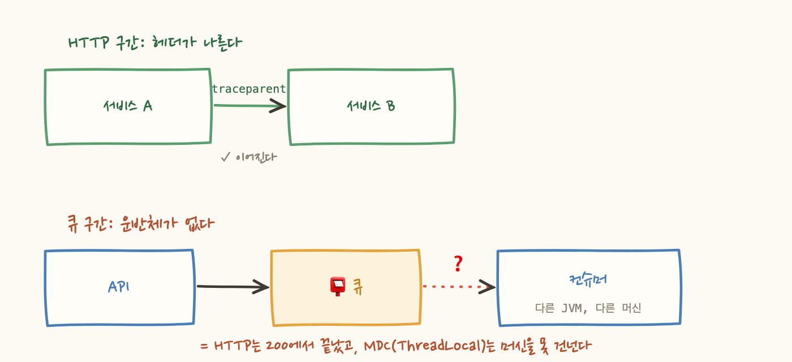
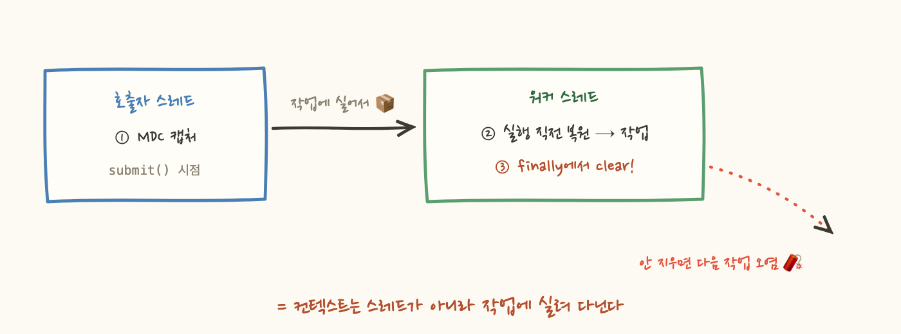

지난 편의 그 장애, 이제 알람은 울립니다. enqueued와 processed가 벌어지기 시작하면 10분 안에 알 수 있어요. 그래서 이번엔 사라진 주문 하나의 여정을 따라가 보려고 트레이스를 열었습니다. 그런데 화면에 뜬 폭포수가 이상합니다. API 서버에서 트레이스가 끝나 있어요. 큐에 넣은 것까지는 보이는데, 그 뒤 컨슈머의 여정은 완전히 다른 세상입니다.
트레이스는 어떻게 큐를 건너는 걸까요? 그리고 왜 기본 상태에선 못 건널까요? 이번 편은 "컨텍스트 전파"라는, 분산추적의 핵심을 뜯어봅니다.
서비스 A가 서비스 B를 HTTP로 호출할 때 트레이스가 이어지는 원리는 단순해요. A가 요청을 보낼 때 요청 헤더에 트레이스의 신분증을 실어 보냅니다:
B는 이 헤더를 읽고 "아, 나는 트레이스 abc123의 일부고, 내 부모는 s04구나" 하며 자식 span을 만들어요. 1편에서 본 parentSpanId가 이렇게 채워지는 거죠. 핵심은 이겁니다. 컨텍스트는 저절로 흐르지 않고, 반드시 무언가에 실려서 이동합니다. HTTP에서는 그 운반체가 요청 헤더였던 거예요.
그런데 주문 파이프라인의 중간에는 큐가 있어요. API가 메시지를 큐에 넣고 200을 반환하면 HTTP 요청은 거기서 끝납니다. 몇 초 뒤 컨슈머가 메시지를 집을 때, 그 컨슈머는 다른 스레드 정도가 아니라 다른 JVM, 다른 머신에서 돌고 있어요.
"로그에 MDC로 traceId를 심어뒀는데요?"라고 할 수 있지만, MDC는 ThreadLocal, 즉 한 프로세스 안, 한 스레드에 붙은 저장소예요. 한 머신의 ThreadLocal이 네트워크 건너 다른 머신의 스레드로 순간이동할 수는 없죠. 운반체였던 HTTP 헤더는 사라졌고, 새 운반체를 아무도 준비하지 않았으니, 트레이스는 큐 앞에서 끊깁니다.

여기서 흔히 나오는 아이디어가 있어요. "메시지에는 어차피 고유 ID가 있으니, 그걸 양쪽 로그에 남겨서 이으면 되지 않나?" 실제로 동작하는 패턴입니다. correlation ID라고 부르고, 로그를 grep으로 이어붙일 수 있게 해주죠. 하지만 트레이싱의 답으로는 두 군데서 어긋납니다.
첫째, 트레이스는 메시지가 태어나기 전에 이미 시작돼 있습니다. 사용자의 HTTP 요청이 들어온 순간 traceId가 발급됐고 API의 span들이 그 아래 쌓이는 중이에요. 컨슈머가 메시지 ID를 트레이스 ID처럼 쓰는 순간, 컨슈머의 작업은 부모가 없는 새 트레이스가 됩니다. 잇고 싶었던 두 세계가 오히려 영영 분리되는 거죠. 둘째, 메시지 ID는 메시지의 신원이지 요청의 여정이 아니에요. 같은 메시지가 재전달되면 같은 ID로 두 번 처리되는데, 그게 한 여정인가요 두 여정인가요?
답은 허무할 만큼 HTTP와 같습니다. 메시지에도 헤더가 있고, traceparent는 거기 실려서 큐를 건넙니다. Kafka는 record headers, SQS는 message attributes, RabbitMQ는 AMQP properties입니다. 이름만 다를 뿐 모두 본문 옆에 붙는 key-value 칸이에요.
보내는 쪽이 헤더에 주입(inject)하고, 받는 쪽이 추출(extract)해서 그 트레이스의 자식 span으로 이어가는 것입니다. HTTP와 원리가 완전히 같고 봉투만 다른 거예요. OpenTelemetry나 Spring의 자동 계측이 해주는 일이 정확히 이거고요. 이제 폭포수에는 API의 span 아래로 "큐 대기 40초"와 컨슈머의 여정까지 한 줄기로 그려집니다.
큐를 건넜다고 끝이 아니에요. 컨슈머가 처리 속도를 높이려고 내부 스레드풀에 작업을 던지는 순간, 네트워크 없이도 같은 문제가 재발합니다:
MDC는 ThreadLocal이고, 람다를 실행하는 풀의 워커 스레드는 다른 스레드니까요. 해법의 원리는 큐 때와 같아요. 컨텍스트를 작업에 실어 보내는 겁니다. 주의할 점은 시점이에요. 풀의 스레드는 한 번 만들어져 수만 개 작업에 재사용되므로, "스레드 생성 시"가 아니라 작업 하나하나마다 해야 합니다. submit 하는 쪽에서 캡처하고, 워커에서 실행 직전에 복원하고, 끝나면 반드시 지웁니다.
